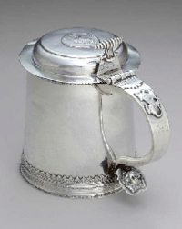

by
Stefan Bielinski
This section considers those artisans who worked in silver, pewter, and gold. Each medium is treated separately although the craftsman may have worked with all these precious metals.
The silversmith was an elite artisan/craftsman working in colonial Albany. The lasting value of their creations has made the silversmith more visible historically than most other metal crafters!
The Ten Eycks and Lansings were prominent silvermithing early Albany families. Typical of all "People of Colonial Albany" presentations, this community history expositions is primarily concerned with the lives of the makers and owners/users of any of their material legacies. The "object-first" or "fine arts" (or museum/curatorial/antiques) approaches to the topic represent the opposite ends of our presentation concerns.
At the beginning of the eighteenth century, New Yorker Cornelis Kierstrede made silver items for at least one Albany resident. He also trained Albany silversmith Coenradt Ten Eyck. Son of that Albany silversmith, Jacob C. Ten Eyck was appointed mayor of Albany in 1748. His brother was a prominent silversmith as well.
Jacob Harsen was among the Albany-born silversmiths working on the frontier beyond Albany. The legendary presence of Albany silversmiths in the Great Lakes country has been portrayed in lyrical form.
In 1756, three silversmiths were listed on the census of Albany householders.
Throughout the second half of the eighteenth century (and particularly during the British occupation of lower New York), a number of Manhattan based silversmiths set up shop in Albany. These included: George Fielding;
After the War for Independence, a number of newcomer silversmiths established themselves in Albany elevating and commercializing the trade in "Albany Silver." They were prominent among the founders of the Albany Mechanics Society. The first city directory in 1813 listed six silversmiths working in Albany. Additional Albany silversmiths of the early nineteenth century included William Boyd.
A number of online resources further describe the process! The impressive silver collection of the Albany Institute of History and Art showcases the work of the individual artisans whose lives are being studied by the Colonial Albany Project.
Pewterers: Because of its versatile utility and comparative cost, pewter items were more frequently found in early Albany homes - with ownership reaching farther down into the socioeconomic spectrum than the more expensive silver. Inventories and other probate instruments named them testifying to the prevalence and value of those implements. Henry Will and other Manhattan-based pewterers relocated to Albany during the War. Will returned to New York but Peter Young, Timothy Brigden, and others remained.
Goldsmiths: Although a number of property lists and inventories noted gold items, actual production of gold items is only occasionally in the community record. Perhaps silversmith Jacob C. Ten Eyck was the first artisan to use the most precious metal. After the Revolution, Balch & Fryer advertised that they had "opened a shop near the north gate, for the purpose of carrying on the gold and silversmith's business." The north gate at this time is believed to have been a little above Columbia street in Broadway.
We are at the beginning of this exposition in every way. Please be patient!
Sources: General reference: Early American Craftsmen; Craftsmen Online; The reigning published work on "Albany silver" is by Norman S. Rice.
Follow this link to more information about the silversmiths of early Albany on this website.
first posted 2003; last revised 8/30/14